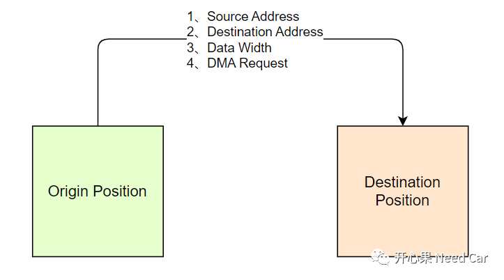
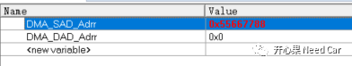
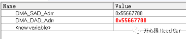
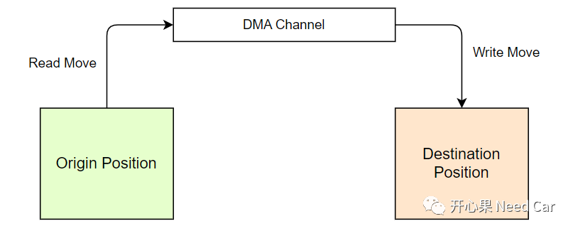
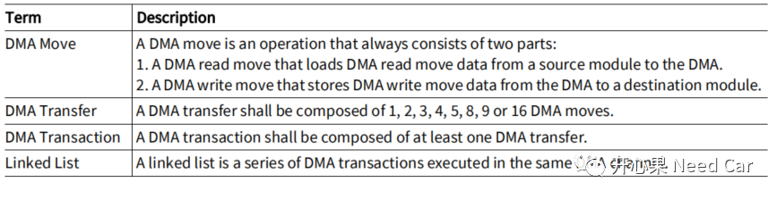
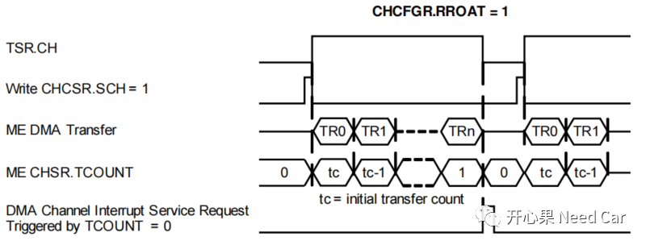
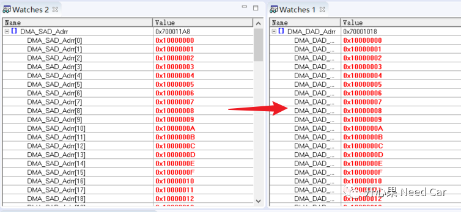
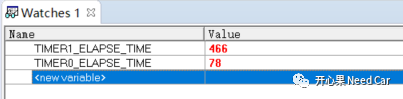
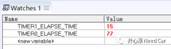
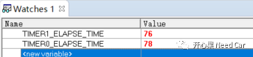

开心果 Need Car · 2022-12-24T00:06:00+08:00 · 微信原文
嵌入式开发中，DMA（Direct Memory Access）的使用已经相当普遍。eg：SPI（QSPI）+DMA，UART+DMA，Ethernet+DMA等，DMA的使用似乎已经成为标配。我们清楚：使用DMA的主要目的是想释放CPU，将搬运数据的活交给DMA干，以便于CPU处理更重要的事情。但是，工程中，Copy数据的动作真的完全放手给DMA就可以吗？本文进行如下几点讨论：
1、精简的DMA搬运驱动Code
2、DMA概念基础
3、何时使用DMA更合适？
提示：基于英飞凌TC3xx。
1、精简的DMA搬运驱动Code

DMA负责将数据由Origin Position搬运到Destination Position，这里的Position可以是内存区，也可以是外设的RAM区。
（一）DMA Code示例
举例：将一个数据宽度为32 bit的数据，由源地址（DMA_SAD_Adrr）搬运到目的地址（DMA_DAD_Adrr），使用软件触发请求。对应的示意代码如下所示：
/* source address */DMA_SADR000.U = DMA_SAD_Adrr;/* destination address */DMA_DADR000.U = DMA_DAD_Adrr;/* channel data width,channel data width to 32 bit */DMA_CHCFGR000.U = (0x2 << 21);/* disable DMA hardware requests */DMA_TSR000.U |= (1 << 17);/* initiate DMA software request */DMA_CHCSR000.U |= (1 << 31);
Step1:准备将DMA_SAD_Adrr地址处的数据0x55667788搬运到DMA_DAD_Adrr，如下所示:

Step2：数据0x55667788完成搬运，如下所示：

可以看出，如上的几行代码即可实现DMA最本质功能。至于DMA的其他功能，对于初学者，可以在此精简的基础上不断地做加法，由简入繁地学习DMA。接下来，我们就在此精简的基础上进一步的学习一下DMA。
2、DMA概念基础
（一）数据搬运结构

DMA数据结构的描述如下所示：

将上述的概念，结合DMA的搬运过程理解一下，如下所示：

解释：
（二）DMA Channel模式
（三）DMA使用示例
举例：将源地址（空间大小 4 * 100 byte）数据搬运到目的地址（空间大小 4 * 100 byte）。源地址和目的地址连续，搬运的数据宽度为4 byte（32 bit）。示例代码如下所示：
{Ifx_DMA_CH_CHCFGR chcfgr;chcfgr.U = 0;/* DMA channel TCS transfer reload value to control the number of DMA* transfers in a DMA transaction.25 * 4 = 100 32-bit data */chcfgr.B.TREL = 25;/* 010B One DMA transfer has 4 DMA moves */chcfgr.B.BLKM = 2;/* One DMA request starts a complete DMA transaction. */chcfgr.B.RROAT = 1;/* Single_Mode, is selected for DMA channel.*/chcfgr.B.CHMODE = 0;/* channel data width,channel data width to 32 bit */chcfgr.B.CHDW = 2;/* 000B No pattern compare operation. */chcfgr.B.PRSEL = 0;DMA_CHCFGR000.U = chcfgr.U;}{Ifx_DMA_CH_ADICR adicr;adicr.U = 0;/* 000B Address offset is 1 x CHDW */adicr.B.SMF = 0;/* 1B Address offset will be added. */adicr.B.INCS = 1;/* DMA channel TCS circular buffer source address update control bit */adicr.B.CBLS = 0;/* 0B Source circular buffer disabled. */adicr.B.SCBE = 0;/* 000B Address offset is 1 x CHDW */adicr.B.DMF = 0x00;/* 1B Address offset will be added. */adicr.B.INCD = 1;adicr.B.CBLD = 0;adicr.B.DCBE = 0;/* DMA channel TCS shadow control */adicr.B.SHCT = 0;/* Time Stamp */adicr.B.STAMP = 0;/* DMA channel TCS source buffer interrupt trigger enable/disable. */adicr.B.WRPSE = 0;adicr.B.WRPDE = 0;/* DMA channel TCS interrupt control. */adicr.B.INTCT = 0;/* Interrupt Raise Detect Value */adicr.B.IRDV = 0;DMA_ADICR000.U = adicr.U;}/* source address */DMA_SADR000.U = DMA_SAD_Adrr;/* destination address */DMA_DADR000.U = DMA_DAD_Adrr;/* disable DMA hardware requests */DMA_TSR000.U |= (1 << 17);/* initiate DMA software request */DMA_CHCSR000.U |= (1 << 31);

以上的讨论，是想让大家知道：DMA的使用和学习并不难，对于初学者，可以根据自己的情况，在此基础上增加DMA Interrupt、菊花链等功能。
3、何时使用DMA更合适？
如上的两个例子，大家已经感受到了，搬运数据这活，让DMA处理，似乎挺好。但是，我们也意识到，如果想让DMA干活，CPU首先要告诉DMA怎么干，即：DMA干活前的所有"准备"工作均由CPU"操心"，这势必需要耗费CPU的时间，所以，如果CPU需要Copy的数据量不大，或者说，CPU自己搬运数据花费的时间比"操心"DMA使能的时间还多，使用DMA就有点大可不必了。
（一）DMA搬运与CPU搬运数据时间对比
举例一：搬运4 * 100 byte数据时间对比
TIMER0_START_TIME = MODULE_STM0.TIM0.U;{Ifx_DMA_CH_CHCFGR chcfgr;chcfgr.U = 0;/* DMA channel TCS transfer reload value to control the number of DMA* transfers in a DMA transaction.25 * 4 = 100 32-bit data */chcfgr.B.TREL = 25;/* 010B One DMA transfer has 4 DMA moves */chcfgr.B.BLKM = 2;/* One DMA request starts a complete DMA transaction. */chcfgr.B.RROAT = 1;/* Single_Mode, is selected for DMA channel.*/chcfgr.B.CHMODE = 0;/* channel data width,channel data width to 32 bit */chcfgr.B.CHDW = 2;/* 000B No pattern compare operation. */chcfgr.B.PRSEL = 0;DMA_CHCFGR000.U = chcfgr.U;}{Ifx_DMA_CH_ADICR adicr;adicr.U = 0;/* 000B Address offset is 1 x CHDW */adicr.B.SMF = 0;/* 1B Address offset will be added. */adicr.B.INCS = 1;/* DMA channel TCS circular buffer source address update control bit */adicr.B.CBLS = 0;/* 0B Source circular buffer disabled. */adicr.B.SCBE = 0;/* 000B Address offset is 1 x CHDW */adicr.B.DMF = 0x00;/* 1B Address offset will be added. */adicr.B.INCD = 1;adicr.B.CBLD = 0;adicr.B.DCBE = 0;/* DMA channel TCS shadow control */adicr.B.SHCT = 0;/* Time Stamp */adicr.B.STAMP = 0;/* DMA channel TCS source buffer interrupt trigger enable/disable. */adicr.B.WRPSE = 0;adicr.B.WRPDE = 0;/* DMA channel TCS interrupt control. */adicr.B.INTCT = 0;/* Interrupt Raise Detect Value */adicr.B.IRDV = 0;DMA_ADICR000.U = adicr.U;}/* source address */DMA_SADR000.U = DMA_SAD_Adrr;/* destination address */DMA_DADR000.U = DMA_DAD_Adrr;/* disable DMA hardware requests */DMA_TSR000.U |= (1 << 17);/* initiate DMA software request */DMA_CHCSR000.U |= (1 << 31);TIMER0_END_TIME = MODULE_STM0.TIM0.U;TIMER0_ELAPSE_TIME = TIMER0_END_TIME - TIMER0_START_TIME;TIMER1_START_TIME = MODULE_STM1.TIM0.U;for(idx = 0x00; idx < DMA_TRANSACTION_LEN; idx++){DMA_DAD_Adrr[idx] = DMA_SAD_Adrr[idx];}TIMER1_END_TIME = MODULE_STM1.TIM0.U;TIMER1_ELAPSE_TIME = TIMER1_END_TIME - TIMER1_START_TIME;
运行时间结果对比：



往期精彩回顾